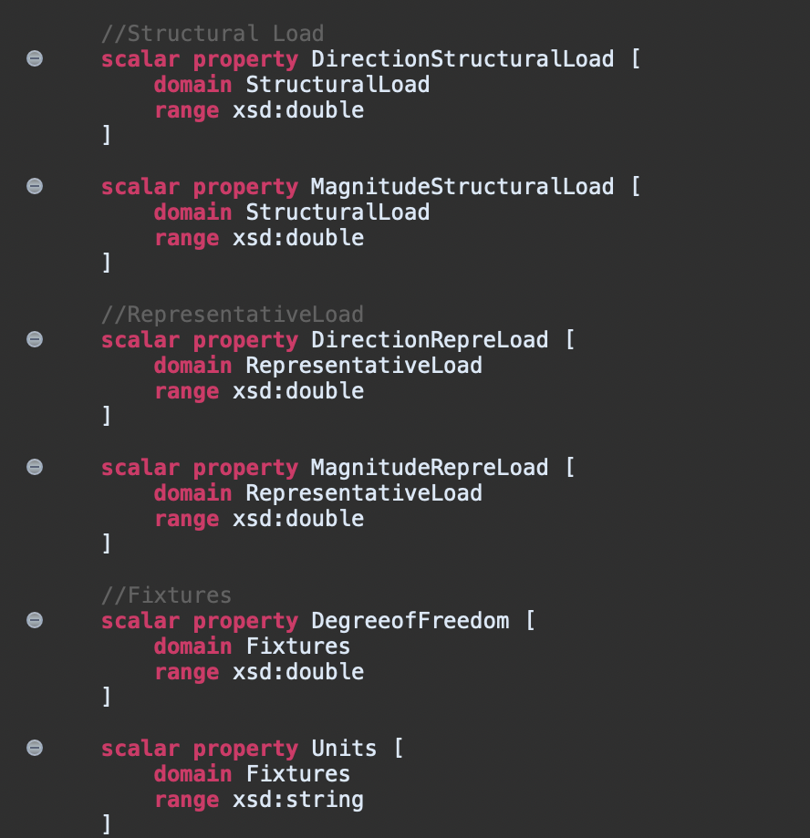
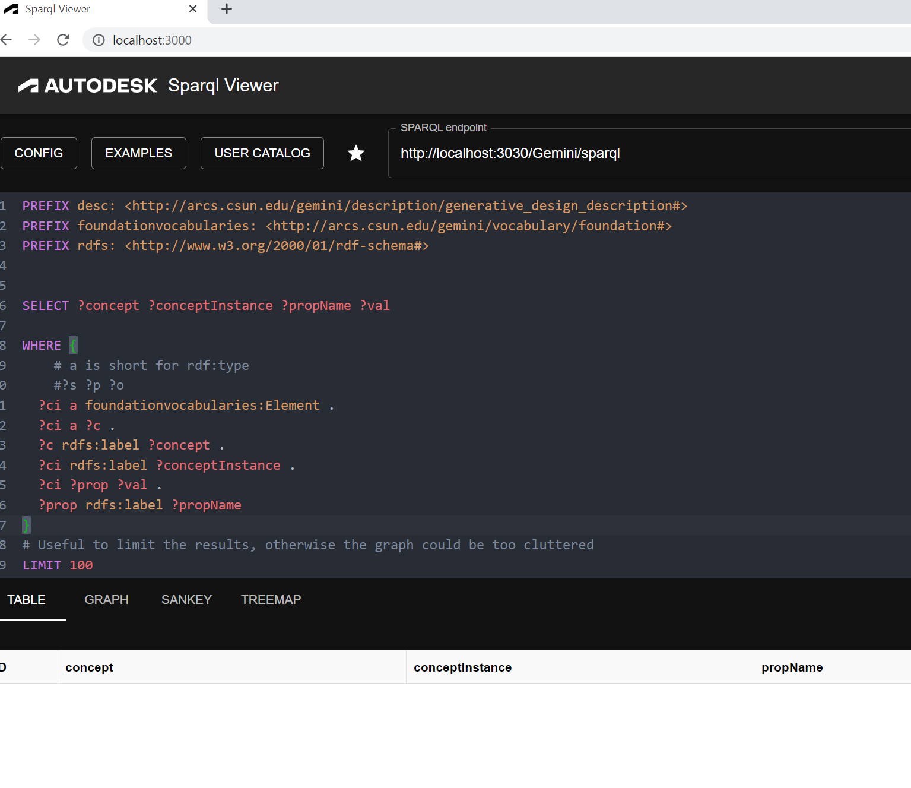

Project GEMINI

Senior Design Project - SPRING 2023
California State University, Northridge
Instructor: Prof. Xunfei Jiang
Introduction
The project involves multidisciplinary fields including structural engineering, system engineering, computer programming as well as the application of new developing technology including 3D metal printing fabrication, generative design with Autodesk Fusion360, and Ontological modeling language (OML) with OpenCaesar provided by JPL.
The purpose of this project is the implementation of Twin-Integrating API, which performs data integration from openCaesar to Autodesk Fusion 360. The main tools that we are using for this project are openCaesar, Autodesk Fusion 360, SPARQL Viewer and SIRIUS.
Background of Our Team
We are undergraduate students majoring in Computer Science at California State University, Northridge. The instructor of our Senior Design Project is Prof. Xunfei Jiang, and the supervisor is Prof. Bingbing Li.
This project is sponsored by NASA Jet Propulsion Laboratory and Autodesk team, with the help of Prof. Maged Elaasar from NASA JPL and Marco Fiocco from Autodesk.
Ted Wu: The leader of the Project GEMINI. Main role in this project is the implementation of SIRIUS Interface and the modification of add-in script to load OML files.
Joycelyn Tuazon: Main role in this project is the modification of queries using SPARQL to retrieve and organize the data into tables to be more easily assessed and reviewed by the engineering team.
Jong Won Lim: Main role in this project is the implementation of new vocabularies of Ontological Modeling Language using openCaesar, and collaborating with Ted on the implementation of SIRIUS User Interface.
Implementation / Design
The main programming language that we've used for this project is Ontological Modeling Language(OML), which functions as a tool for representing ontologies in a well-organized format that can be understood and processed by machines. The ontologies are valuable for promoting the exchange of knowledge, merging data from different sources, and facilitating logical analysis across a range of disciplines, including information science, artificial intelligence, and semantic web applications.
The key implementations that we've done for the project are:
(1)The revision of engineering vocabularies defined in openCaesar, which is an IDE specialized in using OML
(2)Executing a query using SPARQL, which retrieves data from the vocabularies defined in openCaesar and stored in Fuseki Database
Demo / Work
(1)Engineering Vocabulary Revision
(2) Query data using SPARQL Viewer
